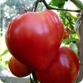

<nz-card>
  <div class="item" nz-row>
    
    <div nz-col nzSpan="15" class="item__desc" nz-row>
      <h3 class="item__desc-title">Қизил Юсуф памидори</h3>
      <span class="item__desc-subtitle">МЧЖ "Green technology"</span>
      <p class="item__desc-text">Ўсимликнинг баландлиги 1 метрга етади, екиш пайтида уни зарур ишларни амалга ошириш
        керак. Озиқ-овқат маҳсулотларидан ташқари, нўхат жуда декоратив кўриришга ега бўлади. </p>
      <div class="item__tags">
        <nz-tag>Томат</nz-tag>
        <nz-tag>Бодринг</nz-tag>
        <nz-tag>Сабзи</nz-tag>
        <nz-tag>Карам</nz-tag>
        <nz-tag>Карам</nz-tag>
      </div>
    </div>
    <div nz-col nzSpan="5" class="item__calc">
      <h4 class="item__calc-price">459 000 000 сум</h4>
      <div class="item__calc-counter">
        <button nz-button nzType="default" nzShape="circle"><i nz-icon nzType="minus" nzTheme="outline"></i></button>
        <span>100 000 Кг</span>
        <button nz-button nzType="default" nzShape="circle"><i nz-icon nzType="plus" nzTheme="outline"></i></button>
      </div>
      <div class="item__calc-contacts">
        <button nz-button nzType="default" nzShape="circle"><i nz-icon nzType="message" nzTheme="outline"></i></button>
        <button nz-button nzType="default" nzShape="circle"><i nz-icon nzType="heart" nzTheme="fill"></i></button>
        <button nz-button nzType="default" nzShape="circle"><i nz-icon nzType="phone" nzTheme="outline"></i></button>
      </div>
      <button nz-button nzType="primary" nzShape="round">Саватчага қўшиш</button>
    </div>
  </div>
</nz-card>
